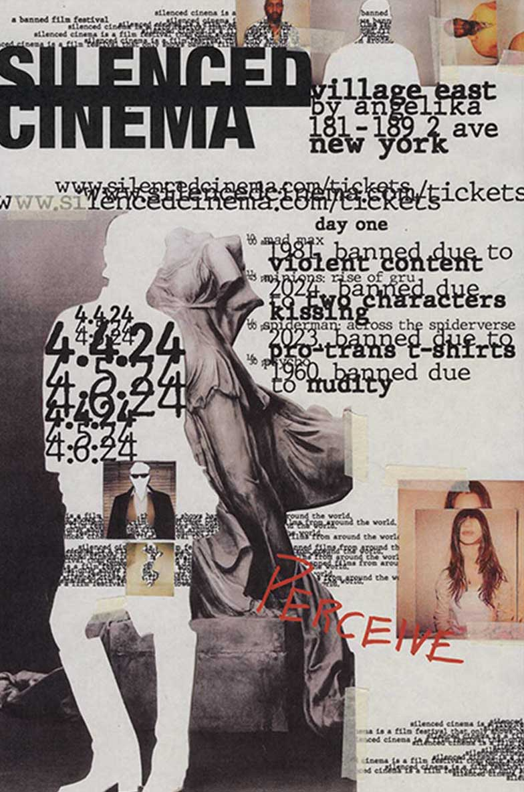

This work was part of a series consisting of three triptychs advertising a film festival only showing films that were banned around the world.
Each poster represents a day of the festival and shares what will happen.
The terms written in red focus on the overall theme of that day.
In order to symbolize the voices taken away by censorship, I cut out different people so they were anonymous and non existant.
The overlapping innaccessible type represents the stories that want to be shared yet are covered up and are unable to be heard.